Sistem monitoring cafe yang memanfaatkan computer vision untuk memantau waktu tunggu pelanggan, jumlah
pelanggan, dan kondisi meja. Sistem ini dirancang untuk mendeteksi okupansi meja secara real-time dan
menghitung estimasi waktu tunggu pelanggan secara otomatis.
Hardware
• Raspberry Pi 5
• Hailo-8L AI Accelerator
• USB Webcam
• ESP32 NodeMCU
• Buzzer SFM-27
Software
• YOLOv8 Nano
• OpenCV
• Flask API
• Tailwind CSS
• Firebase
• MQTT Protocol
/ Results
Mencapai performa inference rate hingga 60 FPS menggunakan akselerasi Hardware Hailo-8L NPU pada resolusi
1080p, dan mengurangi latensi transmisi IoT ke dashboard hingga di bawah 150ms via MQTT.
/ Lessons Learned
Memahami pentingnya thermal management pada SBC Raspberry Pi saat pemrosesan AI serta teknik optimasi bobot
model deep learning untuk Edge AI.
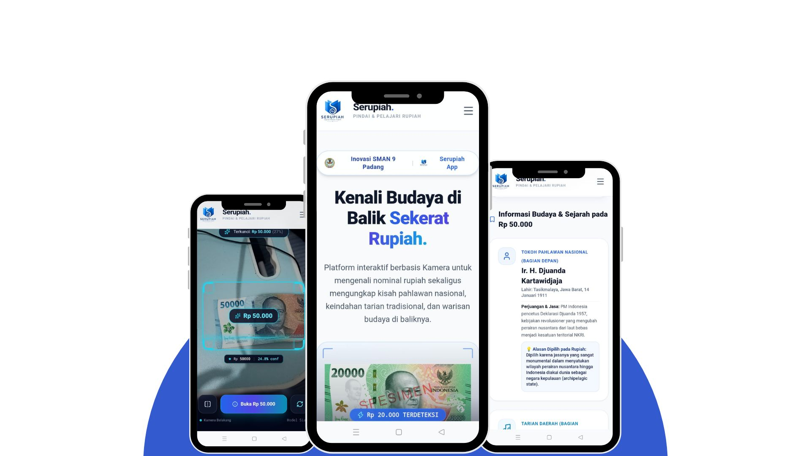
Project Detail
AI Based Serupiah Web App for SMAN 9 Padang
/ Overview
Sebuah aplikasi web interaktif berbasis AI yang dirancang untuk mengubah cara siswa mempelajari sejarah
Indonesia melalui uang kertas. Website akan menampilkan informasi sejarah berdasarkan uang rupiah yang
dideteksi. Sistem berjalan sepenuhnya di browser sehingga tidak membutuhkan koneksi internet server backend.
Technical Highlights
• 7 Classes (Rp1.000 - Rp100.000)
• Model Architecture: MobileNetV3 Small
• Framework: TensorFlow, React
• Device Inference: Client-side
/ Results
Model berukuran sangat ringan (< 5MB) dengan akurasi klasifikasi sebesar 98.2% dan durasi inferensi
kurang dari 50ms di perangkat smartphone. Model dijalankan melalui interface website menggunakan
Tensorflow.js
sehingga mengurangi kebutuhan server yang besar untuk deployment.
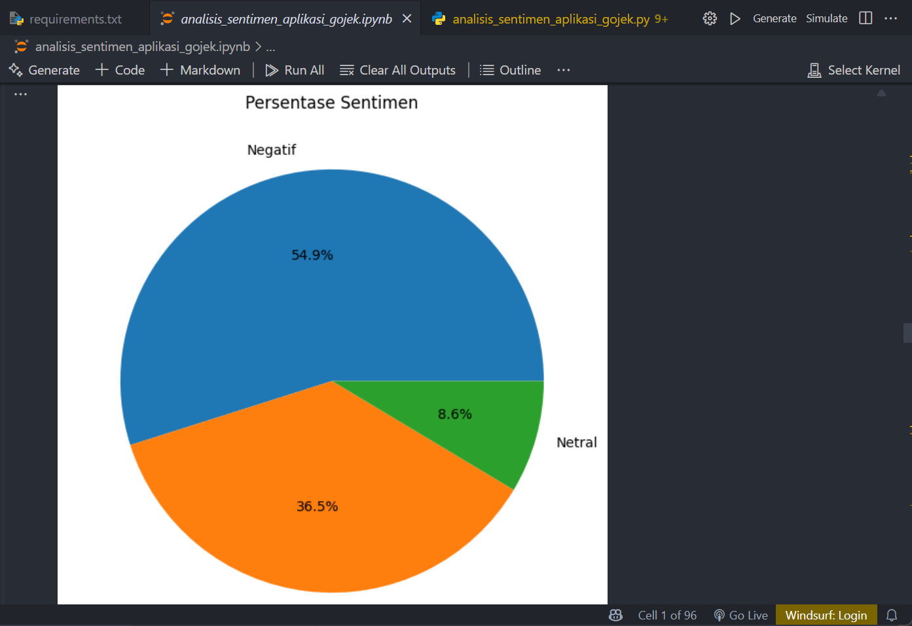
Project Detail
Gojek Sentiment Analysis with Machine Learning Algorithm
/ Overview
Klasifikasi sentimen berskala besar untuk lebih dari 30.000 ulasan pengguna Gojek di Indonesia dengan
menggunakan Transformer dan model ML. Dilakukan eksperimen komparasi algoritma ML klasik dan berbasis
Transformer untuk menganalisis dan mengklasifikasikan sentimen pengguna terhadap aplikasi Gojek di Google Play
Store.
• Baseline Comparison: TF-IDF + SVM, Random Forest + Word2Vec, & Random Forest + TF-IDF
/ Results
Model SVM + TF-IDF menghasilkan akurasi tertinggi sebesar 86.56% dibandingkan dengan model klasik Random
Forest + TF-IDF (79.29%) dan Random Forest + Word2Vec (85.23%). Hasil ini menunjukkan keunggulan model
berbasis Transformer dalam memahami konteks bahasa Indonesia.
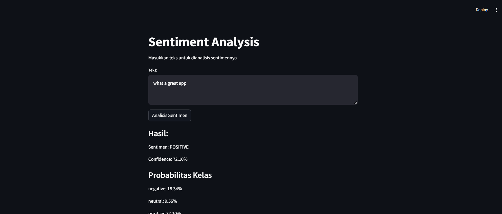
Project Detail
Sentiment Classification Web with Transformer Architecture
/ Overview
Aplikasi web berbasis AI untuk menganalisis sentimen komentar pengguna dengan menggunakan model BERT dan
Transformer untuk klasifikasi teks bahasa Inggris. Teks dibagi menjadi tiga kategori, positif, negatif, dan
netral. Sistem ini dirancang untuk memberikan wawasan cepat tentang opini pengguna terhadap layanan tertentu.
Technical Highlights
• Class Dataset: Positive, Negative, Neutral
• Preprocessing: Cleaning, Mapping, Encoding
• Transformer Architecture
• Training Algorithm: Backpropagation
/ Results
Model Backpropagation mencapai akurasi 78.23% dalam mengklasifikasikan sentimen komentar pengguna. Hasil ini
menunjukkan efektivitas arsitektur Transformer dalam memahami konteks bahasa Inggris.
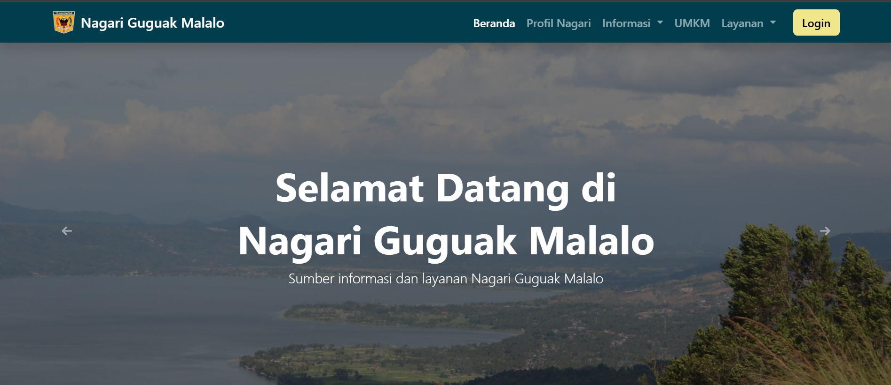
Project Detail
Nagari Guguak Malalo Web
/ Overview
Platform digital berbasis web yang dikembangkan untuk mendukung layanan publik di salah satu nagari di
Kabupaten Tanah Datar, Sumatera Barat. Website ini menyediakan informasi terkait layanan publik, tempat wisata
dan berita di nagari.
Technical Highlights
• Front-End: HTML, CSS, Javascript, Bootstrap
• Back-End: Laravel
• Database: MySQL
• Deployment: Domainesia
/ Results
Website berhasil diimplementasikan dan digunakan oleh masyarakat nagari untuk mengakses informasi pertanian,
peternakan, tenaga kesehatan, tempat wisata, berita terkini, dan layanan administrasi.
Sistem ini meningkatkan transparansi dan aksesibilitas informasi bagi warga nagari.
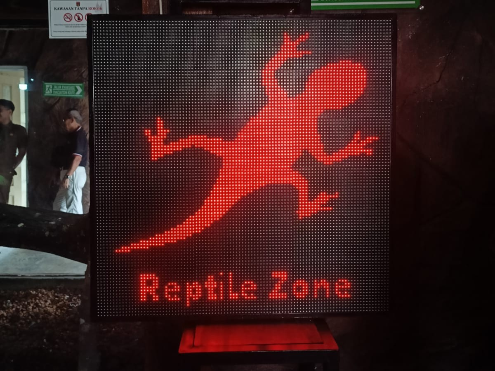
Project Detail
Running Text Information Board in Kinantan Zoo Bukittinggi
/ Overview
Running Text LED sebagai papan informasi dan pemberitahuan untuk dipasang di Kebun Binatang Kinantan
Bukittinggi.
Sistem ini dirancang untuk memberikan informasi terkini kepada pengunjung mengenai nama lokasi, informasi
waktu, dan larangan merokok.
Specification
• Panel LED P10
• Power Supply 5V 60A
• HUIDU W2 Controller
• Aplikasi Kontrol LED
/ Results
Sistem ini berhasil memberikan informasi kepada pengunjung Kebun Binatang Kinantan secara real-time,
meningkatkan pengalaman pengunjung dan mempermudah penyampaian informasi penting.
Pengguna dapat dengan mudah mengubah teks yang ditampilkan melalui aplikasi kontrol LED, sehingga informasi
selalu up-to-date.
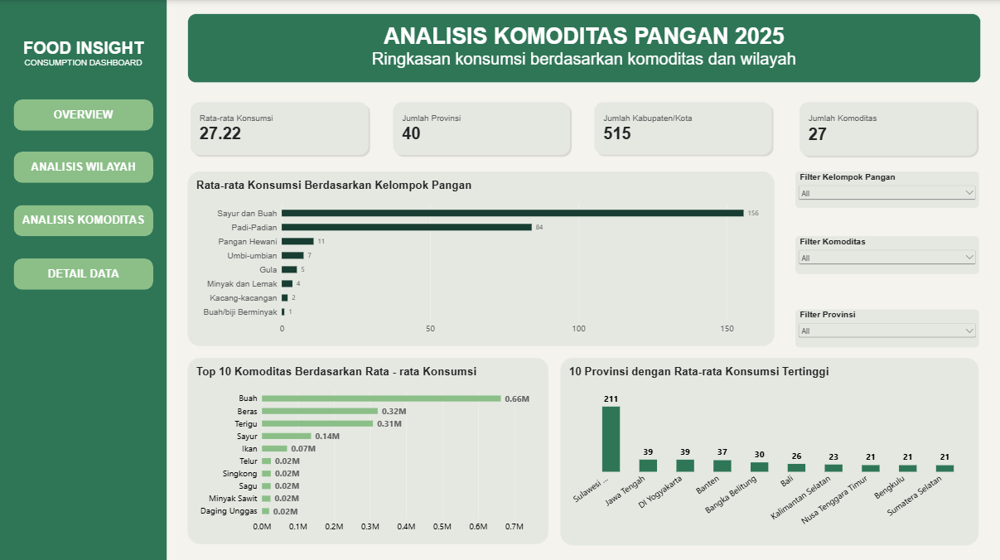
Project Detail
Analysis of Food Consumption Indonesian Population
/ Overview
Analisis pola konsumsi makanan pada populasi Indonesia dari Badan Pangan Nasional tahun 2026, bertujuan untuk
memahami pola dan tren dalam konsumsi makanan, serta dampaknya terhadap kebutuhan masyarakat.
Technical Highlights
• Data Source: Badan Pangan Nasional
• Data Cleaning: Python, Google Colab
• Exploratory Data Analysis: Microsoft Excel
• Statistic Descriptive: Microsoft Excel
• Data Visualization: Microsoft Excel
/ Results
Hasil analisis menunjukkan beberapa hal berikut:
3 komoditas nasional berdasarkan rata-rata konsumsi adalah Buah (257,09), Beras (125,84), dan Terigu
(120,52).
Indonesia Barat sangat bergantung pada beras, umbi-umbian menjadi pilar di wilayah Indonesia Timur.
Sulawesi Selatan memiliki konsumsi tertinggi, disusul oleh Jawa Tengah, Banten, dan DI Yogyakarta.
Kelompok Sayur dan Buah memimpin rata-rata konsumsi, diikuti oleh Kelompok Serealia dan Umbi-umbian.
Komoditas Sagu dan Jagung mencapai puncak konsumsi tinggi di daerah Maluku, Papua, dan Nusa Tenggara
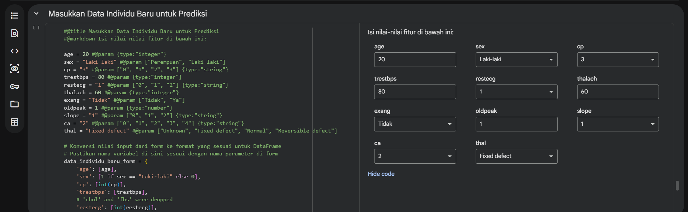
Project Detail
Cardiovascular Disease Prediction System
/ Overview
Sistem prediksi penyakit kardiovaskular menggunakan data kesehatan dan machine learning. Sistem ini dirancang
untuk memprediksi risiko penyakit kardiovaskular pada individu berdasarkan data kesehatan dan gaya hidup
mereka.
Dengan menggunakan model Random Forest, sistem ini dapat membantu memprediksi dan memberikan probabilitas
risiko penyakit jantung.
Technical Highlights
• Algoritma Machine Learning: Random Forest
• Data Cleaning: Python, Numpy, Pandas, Google Colab
• Exploratory Data Analysis: Seaborn, Matplotlib
/ Results
Sistem memiliki beberapa input, termasuk usia, jenis kelamin, tekanan darah, kadar kolesterol, dan indeks
massa tubuh (BMI). Model Random Forest memberikan akurasi prediksi sebesar 87%, precision 90%, recall 86%,
dan F1-score 86% dalam mengidentifikasi risiko penyakit kardiovaskular pada individu.
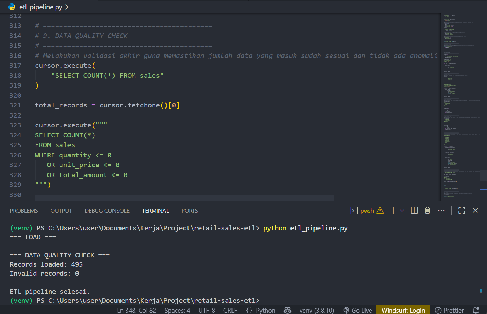
Project Detail
Retail Sales ETL Pipeline & SQL Analytic
/ Overview
Membangun pipeline ETL menggunakan PySpark untuk membersihkan, memvalidasi, dan mentransformasi data transaksi
sebelum dimuat ke database.
Sistem ini dirancang untuk mengelola dan menganalisis data penjualan barang. Proses ETL (Extract, Transform,
Load) digunakan untuk mengumpulkan data, membersihkannya, dan memuatnya ke dalam MySQL untuk analisis lebih
lanjut.
Transform Data
• Mengubah kuantitas menjadi tipe integer
• Mengonversi waktu transaksi menjadi timestamp
• Mengonversi harga satuan menjadi tipe decimal
• Menormalisasi kolom teks
• Menghitung nilai transaksi
• Mengidentifikasi faktur pembatalan
• Mengidentifikasi baris yang tidak valid
• Menghapus duplikat identik dari data yang memenuhi aturan validasi
/ Results
Sistem ini memiliki tahapan ETL yang berhasil membersihkan dan memvalidasi data penjualan, serta memuat data
ke dalam Data Lake Medallion Architecture.
Analisis SQL dilakukan untuk mendapatkan wawasan tentang penjualan, termasuk total penjualan per produk,
jumlah transaksi per metode pembayaran, dan tren penjualan bulanan.
Pipeline berhasil memproses 100000 menjadi 96741 data valid yang siap dianalisis.
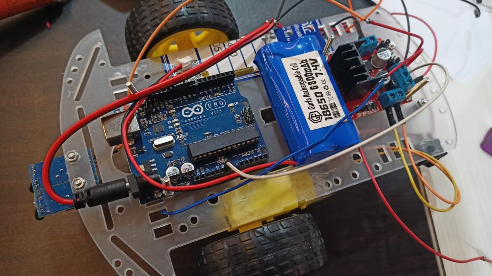
Project Detail
Line Follower Robot, Laboratory Project
/ Overview
Line Follower Robot adalah robot yang dapat mengikuti garis di permukaan. Robot ini dapat berjalan secara
otomatis mengikuti garis dan lintasan yang ada.
Robot ini dirancang untuk dasar robotika dan kompetisi Line Follower
Components
• Arduino Uno
• Sensor Infrared
• Motor DC
• Baterai Li-Po 7.4V
• Motor Driver L298N
• Roda Karet
• Chassis Robot
/ Results
Robot ini dapat berjalan sesuai dengan jalur yang diberikan. Melalui program dan ambang batas, kecepatan
roda robot dapat diatur.
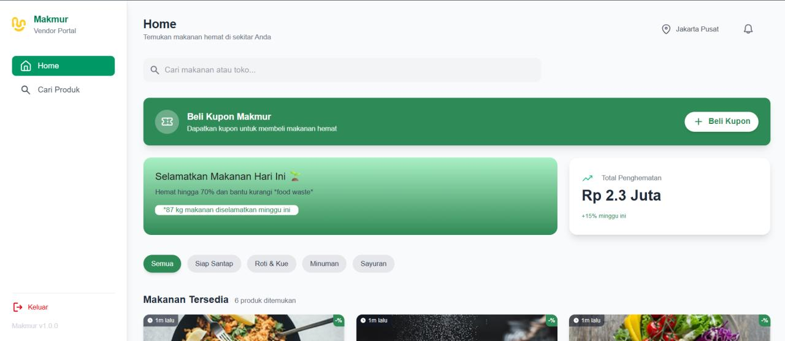
Project Detail
Makmur Food Marketplace
/ Overview
Makmur adalah solusi digital yang dirancang untuk mengurangi limbah makanan sekaligus membantu masyarakat
mendapatkan makanan berkualitas dengan harga yang sangat terjangkau.
Melalui platform ini, toko roti, kafe, dan warung makan lokal dapat dengan mudah menjual sisa makanan harian
mereka yang masih segar dan aman dikonsumsi—melalui kupon digital dengan diskon.
Technical Highlights
• Front-End: Next.js, React, Tailwind CSS
• Back-End: Express.js
• Database: PostgreSQL
• Payment Gateway: Midtrans
• ML Algorithm: Decision Tree
/ Results
Fitur Utama Platform:
• Accountless authentication: Pengguna dapat melakukan transaksi tanpa perlu membuat akun, sehingga
memudahkan mereka. Proses login dan otentikasi sepenuhnya ditangani oleh penjual.
• Dynamic Vendor Dashboard: Memungkinkan pemilik toko memantau tingkat popularitas, total stok produk,
dan statistik penjualan harian secara real-time.
• Interactive Product Discovery: Halaman detail produk yang intuitif, dilengkapi sistem navigasi yang
mengarahkan pengguna langsung ke lokasi toko/penjual untuk kemudahan pengambilan barang.
• QR Code Validation: Untuk setiap pembelian, kode QR unik sebagai kupon akan dihasilkan yang dapat
dipindai dengan aman di toko dan tercatat secara otomatis.
• Smart Dynamic Pricing Engine: Menerapkan sistem penetapan harga cerdas menggunakan Pohon Keputusan
untuk mengklasifikasikan kupon berdasarkan harga jual makanan. Model penetapan harga dinamis ini
mengevaluasi fitur-fitur utama berikut, yaitu fitur gambar makanan, waktu pembuatan, harga asli, jumlah
stok, dan berat.
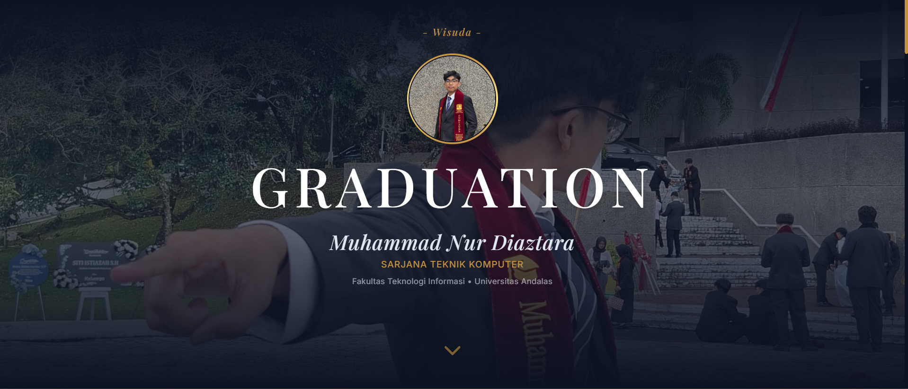
Project Detail
Graduation Invitation
/ Overview
Aplikasi web interaktif yang dirancang untuk membuat undangan wisuda digital yang minimalis dan mudah digunakan. Web ini memungkinkan pengguna membuat undangan wisuda untuk nama tertentu dan dapat dibagikan secara digital.
Technical Highlights
• Web Interface: HTML, CSS, Javascript, Tailwind CSS
• Database: Google Sheets
• API: Google Sheets API
/ Results
Website ini memiliki fitur untuk membuat undangan wisuda digital dengan nama tertentu melalui halaman Admin. Pengguna dapat mengakses undangan melalui tautan yang dibagikan, dan undangan dapat diakses dari berbagai perangkat.
Web ini memberikan pengalaman interaktif bagi penerima undangan dengan musik latar, serta memberikan kolom pesan dan doa yang disimpan melalui Google Sheets.